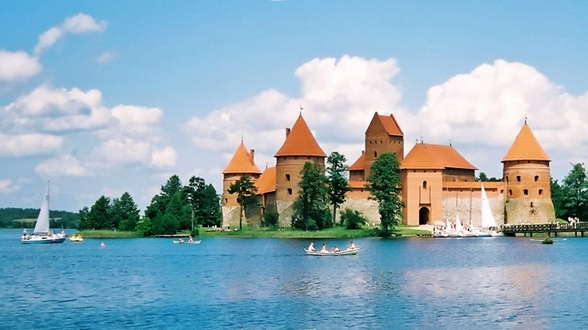

Babtai minimi 1394 m. Kryžiuočių karo kelių aprašymuose kaip tėvonija (kiemas Baptindorf), nors galima manyti, kad ir 1386 m. kryžiuočių žvalgų aprašymo ištraukoje von dannen czu Bapto j mile rašoma apie Babtus. 1394 m. čia buvusios šešios sodybos (šeimynos), buvo dideli vartai. XV a. pabaigoje – XVIII a. Babtai buvo Lietuvos didžiojo kunigaikščio valda. XVI a.–XVII a. Babtai tapo judriu prekybiniu miesteliu. XVII a. gavo miesto teises. 1672 m. pastatyta pirmoji Babtų bažnyčia, 1777 m. jau veikė parapinė mokykla. 1732 m. suteikta savaitinio turgaus ir trijų prekymečių privilegija, 1792 m. suteiktos miesto teisės ir Babtų herbas. Miestelis ne kartą smarkiai degė. Nuo 1774 m. minima pašto stotis, kuri veikė iki XX a. pradžios. Nuo XVIII a. antrosios pusės su pertraukomis veikė parapinė mokykla, 1865 m. įsteigta valdinė pradžios mokykla, nuo 1944 m. progimnazija, nuo 1950 m. vidurinė mokykla. 1955 m. įsteigtas kultūros centras, biblioteka, kraštotyros muziejus. Vietos gyventojai aktyviai dalyvavo 1863 m. sukilime (aktyvus A. Mackevičiaus būrys), daugelis buvo ištremta. Spaudos draudimo metu aktyviai veikė knygnešiai. 1919 metais Jurgis Urlikys Piepalių kaime mėgino sukurti „Sovietinę Babtų respubliką“, kuri neduosianti vyrų į Lietuvos kariuomenę, nemokės mokesčių. Tai jis sugalvojo grįžęs iš Rusijos, kur buvo patekęs karo metais ir susižavėjo revoliucinėmis idėjomis. Atvykus Kauno komendantui Juozui Mikuckui su 30 kareivių šios minties jis atsisakė. Tais pačiais metais Kauno komendantui dar kartą teko vykti į Babtus malšinti prolenkiškų babtiškių, kurie rėmė Vandžiogaloje įsikūrusią lenkų respubliką. 1941 m. birželio mėn. ir 1945–1952 m. sovietų valdžia iš Babtų ištrėmė 34 žmones. Per nacių okupaciją 1941 m. rugpjūčio 31 d. Babtų šile sušaudyti 85 žydai. 1944 m. miestelis apgriautas, po karo atstatytas.[4] Nuo 1950 m. kolūkio centras, nuo 1960 m. Vytėnų sodininkystės ir daržininkystės bandymų stoties, nuo 1987 m. Lietuvos vaisių ir daržovių Mokslo tyrimų instituto eksperimentinio ūkio centrinė gyvenvietė. 1994 m. patvirtintas naujasis Babtų herbas.
Vilnius – Lietuvos sostinė ir didžiausias šalies miestas, Vilniaus apskrities, rajono ir miesto savivaldybės centras. Įsikūręs šalies pietryčiuose, Neries ir Vilnios santakos. Vilnius yra arkivyskupijos centras, nuo 1579 m. – universitetinis miestas. Sostinėje veikia aukščiausios valdžios institucijos – Prezidentūra, Seimas, Vyriausybė, ministerijos, Aukščiausiasis ir Konstitucinis teismai, užsienio valstybių ambasados ir atstovybės, diplomatinės misijos, tarptautinių organizacijų atstovybės. Vilniaus senamiestis 1994 m. yra įtrauktas į UNESCO Pasaulio paveldo sąrašą.Vilnius įsikūręs pačioje Baltijos aukštumų kalvyno juostoje, giliai išraižytoje vingiuoto Neries slėnio. Pietryčiuose paviršius kyla į kalvotą ir slėniuotą Medininkų aukštumą, šiaurėje – į ežeringą Aukštaičių aikštumą, kurios pietinis pakraštys – Riešės aukštuma – kyla ties šiaurės vakariniais miesto pakraščiais (pradedant Šeškine, Viršuliškėmis, Baltupiais, Santariškėmis). Šiaurės rytinė miesto dalis plyti Neries-Žeimenos žemumoje. Centrinė miesto dalis yra plačiame (~5 km) Neries senslėnyje, kuris link upės leidžiasi 8 terasomis. Gilų slėnį taip pat sudaro ir Neries intakas Vilnia. Aukštumos į senslėnį leidžiasi daugiausia stačiais, raguvų išraižytais, šaltiniuotais šlaitais.[3] Vietomis aukštumos priartėja prie pat upių ir taip dėl erozijos atsiveria skardžiai (pvz., Pūčkorių atodanga, Plikakalnio atodanga, Naujanerių atodanga). Žemiausia miesto vieta (97 m) yra Neries pakrantėse, o aukščiausiai paviršius iškyla (234 m) Pavilnyje (Rokantiškių kalva). Vilniaus Šeškinės mikrorajono teritorijoje, yra ledynmetinio akumuliacinio reljefo reliktas – Šeškinės ozas. Kiti raiškesni ledyniniai kraštovaizdžiai – Panerių kalvynas, Gariūnų sufozinis cirkas, Rasų-Ribiškių kalvynas.
Seniausios archeologams žinomos gyvenvietės dabartinių Trakų vietoje gyvavo jau I tūkstm. pr. m. e. Tačiau pats Trakų vardas iš pradžių veikiausiai priklausė ne dabartiniams, bet Seniesiems Trakams – už 4 km į pietryčius nuo Trakų (minimi nuo 1337 m., tuo metu jau galėjusi būti kunigaikštystė). 1994–1997 m. archeologiniai tyrimai parodė, kad Senieji Trakai buvo įkurti apie XIII a. pabaigoje, tada tikriausiai paties Ldk Gedimino nurodymu visiškai „kultūriškai tuščioje“ vietoje iškirtus mišką ir sumūrijus gardinio tipo pilį. Tikėtina, kad būtent į šiuos Trakus 1316 m. Gediminas iš Kernavės ar kurios kitos vietos perkėlė savo kaip LDK monarcho sostinę, pastatydamas pilį (tiesa, jau 1323 m. perkeldamas sostinę į Vilnių). Tuo tarpu dabartiniai, arba Naujieji Trakai antruoju po Vilniaus LDK politiniu administraciniu centru (bet ne Lietuvos sostine) tapo tik apie 1375 m., LDK submonarchui Kęstučiui įsikūrus XIV a. II ketvirtyje ar viduryje pradėtoje statyti Trakų pusiasalio pilyje (pirmojoje Trakų pilyje), kuri buvo baigta XIV 8-ajame dešimtmetyje, tačiau sugriauta 1382–1383 m. vidaus kovų metu. 1409 m. baigta statyti Trakų salos pilis (antroji pilis Trakuose) buvo stipriausia ir didingiausia LDK. Ji iš karto tapo svarbiausia kunigaikščio Vytauto Didžiojo rezidencija. XIV a. susiklostė linijinis miesto planas. Apie XV a. pradžią Trakams tapus nemažu miestu, 1409 m. jiems buvo suteiktos Magdeburgo miesto teisės, atidaryta parapinė mokykla [3]; šiek tiek vėliau tokias pačias teises – atskirai nuo krikščioniškosios miesto dalies – gavo ir Trakų karaimų bendruomenė. Miesto klestėjimo laikotarpiu laikomi XV ir XVI a., XV a. pastatyta rotušė. Iki XVI a. pradžios Trakuose buvo saugomas LDK archyvas – Lietuvos Metrika. XVI–XVII a. Trakų kaip svarbaus politinio, prekybos ir kultūros centro reikšmė sunyko. Miestas labai nukentėjo XVII a. viduryje, vykstant Maskvos karui, kuomet Trakus kelerius metus niokojo Rusijos okupacinė kariuomenė, – būtent šio karo metu abidvi Trakų pilys virto griuvėsiais. 1654–1667 m. miestas apiplėštas ir sudegintas, 1700–1721 m. Šiaurės karo metu taip pat degė. 1915 m. vokiečių kariuomenės artilerijos apšaudymai sunaikino miesto centrą. 1924 m. lenkų valdžia įteigė Mokytojų seminariją, rengusią pedagogus Vilnijos krašto pradžios mokykloms. Tarpkariu mieste buvo įsikūręs Trakų pasienio apsaugos korpusas. 1938 m. įkurtas karaimų muziejus. 1946 m. rugpjūčio 3 d. tapo apskrities pavaldumo miestu. 1954 m. dalis miesto teritorijos prijungta prie Senųjų Trakų apylinkės. 1960 m. įsteigtas Trakų kraštovaizdžio draustinis, 1991 m. – Trakų istorinis nacionalinis parkas. Sovietmečiu veikė turizmo bazė, kempingas, jachtų klubas, 2 irklavimo bazės. Pastatyti kultūros namai (architektas A. Paulauskas). 1996 m. patvirtintas dabartinis Trakų herbas. 2008 m. suteiktas kurortinės teritorijos statusas.
Kaunas – antrasis pagal dydį Lietuvos miestas šalies centrinėje dalyje, Nemuno ir Neries santakoje. Svarbus pramonės, transporto, mokslo ir kultūros centras, Laikinoji sostinė. Kauno miesto savivaldybės, Kauno rajono savivaldybės, arkivyskupijos centras. Gyventojų skaičius (2019 m. sausio 1 d.) – 286,7 tūkstKaunas buvo vienas dažniausiai minimų miestų vokiečių ordinų kronikose (Kauen, Cawen, Kauwenpille ir kt.), dažnai minimas ir Rusijos kronikose. Šiuo metu vyrauja kalbininkų nuomonė, kad miesto pavadinimas kilęs iš asmenvardžio Kaunas; tokia pavardė ir dabar pasitaiko keturkampyje Jurbarkas–Jonava–Alytus–Vilkaviškis, į kurį patenka ir Kaunas. Šią versiją dar 1925 m. pateikė A. Senas, jai pritarė Pranas Skardžius ir P. Jonikas. Kas buvo tas Kaunas – nežinoma, svarstoma, kad veikiausiai tai galėjęs būti pilies valdovas. Tokią prielaidą leidžia daryti ir dabartinis pilies pavadinimas: net kauniečiai ją dažniau vadina Kauno pilimi, o ne tiesiog pilimi, nors kitos pilies Kaune ir nėra. Pats asmenvardis Kaunas kildinamas iš būdvardžio kaunus – „kuris mėgsta muštis, kautis“. Kiek vėliau už A. Seną vokiečių kalbininkas G. Študerus iškėlė hipotezę, kad Kauno pirminė reikšmė galėjusi būti ‘gilus’, ‘žemas’, ‘slėnyje esąs’. Jo nuomone, šaknis kaun- kilusi iš indoeuropiečių šaknies *kau-, *keu- ‘lenkti(s)’, ‘linkti’; iš čia išsirutuliojo ir reikšmė ‘žemas’ bei su ja susijusios kitos reikšmės, plg. gotų hauns ‘žemas’, vokiečių Hohn ‘pajuoka’, latvių kauns ‘gėda’. Vadinasi, šiuo atveju Kaunas kildinamas iš spėjamai buvusio, bet išnykusio būdvardžio kaunas ar kaunus ‘žemas’. Atvejų, kai vietovardis užkonservuoja anksčiau turėtus, bet jau nebevartojamus žodžius ar jų dalis, yra ne vienas, plg. Simnas (iš spėjamai išnykusio tokio paties ežeravardžio ar asmenvardžio), Stabingis (iš jotvingių ir prūsų kalbų žodžio stabis ‘akmuo’), Kirsna (iš jotvingių ir prūsų kalbų žodžio kirsnan ‘juodas’), Palanga, Kretinga (su kuršiškomis priesagomis -ang-, -ing-) ir kt. Kauno vardas turi ir legendinius kilmės aiškinimus. Legendoje apie Palemoną (Bychovco kronika, XVI a.) Kauno vardas kildinamas iš Palemono viduriniojo sūnaus Kūno vardo: esą šis atsikėlęs prie Nevėžio (?) žiočių ir įkūręs miestą, kurį pavadinęs savo vardu. Istorikas Teodoras Narbutas XIX a. yra užrašęs (ar sukūręs?) legendą, jog lietuviai garbinę dievaitį Kaunį, primenantį graikų Apoloną. Didžiulė Kaunio statula esą stovėjusi Nemuno pakrantėje ties dabartiniu Kauno senamiesčiu; Kaunį savo globėju laikę sielininkai, todėl audros metu šiam dievaičiui degindavę auką: augalų ūglių, šaknų, porą avinų.
Panevėžys – miestas šiaurės Lietuvoje, Vidurio Lietuvos žemumoje, abipus Nevėžio, 136 km į šiaurės vakarus nuo Vilniaus. Vienas didžiųjų Lietuvos miestų (penktasis pagal dydį). Panevėžys yra apskrities ir Panevėžio rajono savivaldybės centras, Panevėžio miesto savivaldybė, taip pat Panevėžio ir Velžio seniūnijos centras, Panevėžio vyskupija Legenda byloja, kad Ldk Vytautas Didysis, grįždamas iš Žemaitijos į Vilnių, 1414 metais, radęs čia senosios lietuvių tikybos šventyklą, tačiau dokumentiškai tai nėra užfiksuota. Tiksliai galima pasakyti tai, kad Panevėžio vardas paminėtas 1503 metų rugsėjo 7 d., kuomet Lietuvos didysis kunigaikštis ir Lenkijos karalius Aleksandras savo rašte Ramygalos bažnyčios klebonui apie dovanojamas žemes tarp Nevėžio ir Lėvens upių pamini Panevėžio miesto vardą (Panevėžio dvaro žemės, buvusios dešiniajame Nevėžio krante, perduodamos Ramygalos parapijai). Šiame sklype dešiniajame Nevėžio krante (1507 m.) pastatyta bažnyčia, o šalia, kaip bažnytinė valda – smuklė, spirito varykla, pirtis. Taip ėmė kurtis Senasis Panevėžys (dabartinis Senamiestis). 1548 m. dvaro žemių patikros rašte, Nevėžio kairiajame krante jau minimas ir Naujasis miestas (dabartinis Naujamiestis). Naujasis Panevėžys, priklausantis didžiojo kunigaikščio dvarui, įsikūrė kairiajame Nevėžio krante ir greitai pralenkė Senąjį. Miestas pamažu įgavo vis didesnę reikšmę – 1565–1566 m. Lietuvoje vykstant administracinei reformai Panevėžio dvaras tapo Upytės pavieto centru, o 1568 m. iš Krekenavos į Panevėžį atkeliamas pavieto teismas. 1661 m. Senasis Panevėžys gavo turgaus privilegiją. Nuo 1780 m. Senasis ir Naujasis Panevėžys ėmė jungtis, tais metais ėmė kurtis Mikolajavas (Mikolajevas) – gyvenvietė, pavadinta pagal jos savininką M. Tiškevičių. 1791–1792 m. tapo miestu (nors savivalda įvesta, bet nespėtai jai gauti privilegijos). XIX a. 1-ojoje pusėje Senasis Panevėžys ir Mikolajavas tapo Panevėžio priemiesčiais (galutinai prijungti prie miesto 1915 m.). XIX amžiuje, pakankamai ekonomiškai ir politiškai stabiliame, susidarė gana palankios sąlygos ir Panevėžio miesto plėtrai. Tik tris kartus – 1812 m. pražygiuojant Napoleono armijai ir 1831 bei 1863 metų sukilimų metu miestas patyrė žymesnius sukrėtimus, kurių pasekmės buvo greitai likviduotos. 1811 m. Panevėžys rusų valdžios išpirktas iš privataus savininko, tai pagerino jo ekonominę ir politinę padėtį. XIX a. mieste įsikūrė sentikių bendruomenė. 1881 m. miestas nukentėjo nuo didžiulio gaisro. XIX a. pabaigoje miesto raidą paspartino nutiestas geležinkelis Radviliškis–Daugpilis, o 1899 m. ir siaurukas Švenčionėliai–Panevėžys. Tuo metu mieste buvo odos, saldainių, spirito, tabako fabrikėliai. Pagrindinis tolesnių dviejų miesto istorijos šimtmečių bruožas yra nuolatinis ir greitas augimas, kuris reiškėsi gyventojų skaičiaus didėjimu bei ekonomikos, infrastruktūros, socialinės sferos ir kultūros plėtra. Miestas smarkiai nukentėjo I pasaulinio karo metu, sudegė apie trečdalis miesto. Tarpukariu miestas garsėjo malūnais, pastatyti linų apdirbimo, cukraus ir muilo fabrikai. 1927 m. įsteigta Panevėžio vyskupija. 1944 m. liepos 22 d. Panevėžį užėmė I. Bagramiano vadovaujama sovietų kariuomenė. Panevėžys garsėjo savo gamyklomis ir fabrikais. Po 1945 metų, pokario laikais, miesto gyvenimą įtakojant komunistų partijai ir sovietinei santvarkai, miestas ėmė plėstis į pramonės centrą. Plėtėsi miesto teritorija, išaugo stambūs gyvenamųjų namų kvartalai. 1955–1965 m. pastatytos autokompresorių, „Ekrano“, kabelių, tiksliosios mechanikos gamyklos, stiklo fabrikas. 7-ajame dešimtmetyje pradėta miesto centrinės dalies rekonstrukcija, sutvarkyta Nevėžio senvagė. Vakarinėje miesto dalyje pastatyti nauji mikrorajonai – Klaipėda (architektės I. Daujotytė, I. Mumšienė, G. Bimbienė), Pilėnai (architektė G. Bilubienė), Kniaudiškiai (architektai V. Andriuška, M. Steponavičius ir kt.), Tulpės (architektai S. Katilius ir N. Garbaliauskienė). Miestas plėtotas pagal 1947, 1962 m. (architektė I. Daujotaitė), 1973 m. (architektas V. Bugailiškis) bendruosius planus. Stambios pramonės augimas buvo ir iš dalies tebėra miesto gyventojų pasididžiavimo ir bendruomenės integracijos faktorius. Būtent jis keliems dešimtmečiams tapo panevėžiečių savivokos pagrindu. Greitas miesto augimas ir spartus gyventojų skaičiaus daugėjimas iškėlė daug problemų. Miestas tapo gaminančiu, bet nei projektuojančiu, nei kuriančiu. Nuo ekonomikos ryškiai atsiliko kultūrinės ir socialinės sferų plėtra. Panevėžyje nebuvo įkurta nė viena reikšmingesnė mokslo įstaiga, švietimo sistema per pastaruosius beveik tris šimtus metų netoli tepažengė nuo vidurinio mokslo lygio. Iš kultūros institucijų tik Panevėžio dramos teatras apie du dešimtmečius buvo pasiekęs aukštesnį nei nacionalinis teatras lygį. Miestas neturėjo galimybių suformuoti savo intelektualinio potencialo. 1990 m. Lietuvai atgavus nepriklausomybę prasidėjo greitas visuomenės integravimas į šiuolaikinę Europos bendruomenę. Jis vyksta visose – mentaliteto, ekonomikos, papročių, elgesio normų, kultūros ir švietimo modelių sferose. Didžiausias išbandymas teko miesto pramonei, kuri turėjo labai greitai restruktūrizuotis ir prisitaikyti pri
Marijampolė – miestas pietvakarių Lietuvoje, 56 km į pietvakarius nuo Kauno. Neoficiali Suvalkijos (Sūduvos) sostinė, taip pat Marijampolės apskrities, Marijampolės savivaldybės ir kaimiškosios seniūnijos centras.Miesto apylinkės dar iki viduramžių pabaigos buvo gyvenamos jotvingių genties. Juos mena Šešupės ardomas Marijampolės piliakalnis ir greta Marijampolės stūksantis Kumelionių piliakalnis. Manoma, kad iki XVI a. dabartinio miesto vietoje buvo miškai, į kuriuos kolonistai pradėjo kraustytis tik XVI a. Kolonizaciją galėjo paspartinti rusų invazija į Lietuvą 1655 m., kadangi pabėgėliai nuo rusų ieškojo prieglaudos Sūduvos miškuose. Įprasta manyti, kad Marijampolė įkurta 1667 m. (remiantis istoriko ir kunigo Jono Totoraičio „Sūduvos Suvalkijos istorija“; kaimas minimas Kauno pavieto mokesčių sąraše). Ji kildinama iš Pašešupio kaimo, kuris buvo dabartinės J. Basanavičiaus aikštės vietoje ir priklausė Prienų seniūnijai. Tačiau dar 1662 m. įrašuose nurodoma, kad 1659–1661 m. buvo mokami mokesčiai kariuomenės reikalams nuo Pašešupio valdos laikytojo Adomo Narbuto ir jo žmonos. Be to, rasta dokumentų, dar 1626 m. mininčių Pašešupio kaimą. Šiaurės karo metu 1701 m. Marijampolės apylinkės buvo nusiaubtos ir po Prienų pilies sugriovimo į nuošalesnę vietą prie Šešupės atsikraustė grafo G. Butlerio giminė, kuri 1717 m. netoli kaimo įkūrė Kvietiškio dvarą ir tapo miestelio įkūrimo iniciatoriumi. Prienų seniūnui Pašešupio vardas nepatiko, todėl jį pervadino Starapole (minima nuo 1736 m.). Besikuriant Starapolei netoliese ėmė augti kitas miestelis (nuo 1756 m. minimas kaip Marijampolė), kurį pastačiusi bažnyčią įkūrė grafienė P. Butlerienė. 1750 m. Prienų seniūnė grafienė P. Butlerienė iš marijonų vienuolyno išrūpino Starapolei kunigą ir tarp Šešupės bei Jevonio upių pastatė vienuolyną su bažnyčia. XVIII a. bažnytkaimis išaugo į prekybinį miestelį. Pastačius marijonų vienuolyną, miestelis pavadintas Marijampole (minima nuo 1756 m.). Dvaras ir kaimas susijungė, 1792 m. vasario 23 d. Lietuvos didysis kunigaikštis Stanislovas Augustas Poniatovskis suteikė Magdeburgo savivaldos teisių privilegiją ir herbą. 1812 m. gruodžio 5 d. pro Marijampolę grįždamas į Varšuvą pravažiavo imperatorius Napoleonas Bonapartas. 1829 m. baigtas tiesti plentas Peterburgas-Varšuva (su atšaka į Karaliaučių). 1831 m. sukilimo metu 1831 m. balandžio 22 d. įvyko Marijampolės mūšis. 1863 m. sukilimo metu prie Marijampolės vyko aršios dalgininkų kovos su caro kariuomene. Marijampolė garsi savo šimtamete gimnazija, kurioje mokėsi tautinio atgimimo žadintojai Jonas Basanavičius ir Vincas Kudirka. Lietuviškos spaudos draudimo laikotarpiu aktyviai veikė „Varpo“ platintojai, susibūrę į slaptą „Sietyno“ organizaciją. Marijampolė nuo senų laikų yra švietimo centras, tarpukario laikotarpiu čia veikė ne viena leidykla, kuria rūpinosi vienuoliai marijonai. Tarpukariu nutiestas geležinkelis Kazlų Rūda-Šeštokai, 1926 m. pastatyta geležinkelio stotis (archit. Edmundas Alfonsas Frykas). 1931 m. AB „Lietuvos cukrus“ Marijampolėje pastatė cukraus fabriką, kuris ilgą laiką buvo pagrindinis pramonės objektas. 1936 m. įkurtas „Šešupės“ audimo fabrikas. 1940–1941 m. sovietų valdžia ištrėmė kelis šimtus Marijampolės apskrities gyventojų. Pirmosiomis Antrojo pasaulinio karo dienomis miestas buvo bombarduotas, prie Šešupės vokiečiai sušaudė žydų tautybės asmenis. 1944 m. gegužės 15 d. SS išformavo nepaklususį generolo Povilo Plechavičiaus vietinės rinktinės padalinį – 2 tūkst. karo mokyklos kursantų. Sugrįžus frontui SSRS armijos kontražvalgyba „SMERŠ“ Marijampolėje represavo apie 500 asmenų. Pokaryje apylinkėse veikė partizanų „Tauro“ apygardos būriai. Sovietmečiu miestas buvo industrializuotas ir gerokai išaugo, buvo pervadintas LKP lyderio Vinco Kapsuko garbei – Kapsuku, siekiant panaikinti religinį atspalvį miesto pavadinime. 1946 m. rugpjūčio 3 d. tapo apskrities pavaldumo miestu. Sovietmečiu pastatytas didelis pramonės automatų gamybinis susivienijimas, putliųjų verpalų fabrikas, pieno konservų kombinatas, automobilių remonto gamykla, grūdų produktų kombinatas, įkurtas agroprekybinis sovietinis ūkis-technikumas. Pastatyti Degučių, Mokolų ir Draugystės mikrorajonai, poilsio parkas, 10 aukštų viešbutis „Sūduva“ (archit. Aldona Kačerauskaitė), universalinė parduotuvė „Gulbė“ (archit. A. Kačerauskaitė), naujas paštas (archit. J. Putna), kraštotyros muziejus.

Palanga (žem. Palonga) – miestas Žemaitijoje, prie Baltijos jūros, 25 km į šiaurę nuo Klaipėdos, klimatinis ir balneologinis kurortas. Administraciškai priklauso Palangos miesto savivaldybei, kuri apima Palangos, Šventosios ir Būtingės gyvenvietes. Yra 3 pašto skyriai (centrinis LT-00001).Pirmieji gyventojai dabartinės Palangos teritorijoje apsigyveno III tūkst. pr.m.e.Vandens telkiniai X a. Palangoje įsisteigė ir suklestėjo prekybinis skandinavų centras, kuris dalyvavo ir skandinavų prekyboje su Rytų šalimis. Jos kapinynuose rasta arabiškų monetų, svarstyklių ir svarelių, būdingų pirklių kapams.[5] XI a. Palanga įgavo ankstyvojo miesto bruožų.[6] Pirmą kartą Palanga paminėta aprašant 1161 m. įvykius danų kronikoje, kai esą danai buvo užėmę Palangos pilį, tačiau šios istorijos autentiškumas yra abejotinas. XII a. pabaigoje Palangos prekybos centras sunyko, tai sutapo su bendru kuršių kultūros nuosmūkiu. Livonijos ordino ir Kuršo sutartyje gyvenvietė minima 1253 m. balandžio 5 d. (kaip Palange). Šį data minima kaip Palangos įkūrimo data.[4] Iki XV a. pabaigos Palangoje ant Birutės kalno veikė stulpinė stebykla Saulės ir Mėnulio judėjimui sekti bei kalendoriui tvarkyti. Palangą kelis kartus buvo užėmę Livonijos ir Kryžiuočių ordinai. Palangos ruožas buvo svarbus strategiškai, siekiant sausuma sujungti ordino Prūsijos ir Livonijos dalis. Tam siekiui buvo nelemta išsipildyti, po Žalgirio mūšio Ordinas buvo išstumtas iš Žemaitijos, o 1435 m. gruodžio 31 d. Brastos taika Palangą galutinai priskyrė LDK. Manoma, kad Palangoje XV a. dar buvo išlikusi nedidelė senųjų gyventojų kuršių kolonija. Vėliau kuršių etnosas nyko, jį keitė atsikėlę iš gretimų žemių žemaičiai ir kuršių palikuonys kuršininkai.[7] XV–XVII a. Palanga buvo svarbiausias Lietuvos uostas, kurio gyventojai užsiimdavo žvejyba, rinkdavo gintarą, prekiavo su kitais uostais (žr. Palangos uostas). XVI–XVII a. buvo seniūnijos centras, nuo 1547 m. minima kaip miestelis, 1529–1562 m. buvo LDK neprivilegijuotųjų miestų sąraše. XVI a. pabaigoje pastatyta Palangos bažnyčia.[8] 1600 m. leista rengti vieną savaitinį turgų ir du metinius prekymečius. Vėliau prekybos privilegijos buvo išplėstos. 1667 m. minimas Palangos pavietas. Šiaurės karo metu Palangoje buvo kaupiami saksų kariuomenės aprūpinimui reikalingi reikmenys, dėl to 1701 m. liepą Švedijos kariuomenė užėmė Palangą[9], išgriovė ir akmenimis užvertė uostą. Tuo pačiu metu buvo sugriautas ir Šventosios uostas. XVIII a. kelis kartus kurti uostų atstatymo projektai, tačiau jie nebuvo realizuoti. XVIII a. pabaigoje Palanga iš valstybinės valdos tapo privačia - karalius ją perleido S.Masalskiui.[10] 1791 (ar 1792) metais Ketverių metų seimas Palangai, kaip karališkam miestui, suteikė Magdeburgo teises[4] (savivalda įvesta, bet privilegijos nespėta gauti). 1794 m. vykstant Kosciuškos sukilimui buvo užimta sukilėlių.[8] Po Abiejų Tautų Respublikos padalinimo Palanga priskirta Vilniaus gubernijai, o 1819 m. su apylinkėmis prijungta prie Kuršo gubernijos.[11] To prašė vietos bajorai, o galbūt Kurliandijos vokiečiai pirkliai, kad palengvėtų kelionės į Vokietiją.[12]
Anykščiai – miestas šiaurės rytų Lietuvoje, Aukštaitijoje, Utenos apskrityje, 33 km į vakarus nuo Utenos, Anykščių kalvagūbryje (95–112 m virš jūros lygio). Rajono savivaldybės, seniūnijos, parapijos centras, regioninio parko direkcija, paštas, siaurojo geležinkelio stotis. Urbanistikos paminklas, kurortinė teritorija.Archeologiniai radiniai rodo pirmuosius gyventojus Anykščių apylinkėse buvus nuo 9000 m. pr. m. e. Pirmą kartą Anykščiai paminėti 1440 m. (kai kuriais šaltiniais dar 1422 m.) kaip Lietuvos didžiojo kunigaikščio Anykščių dvaras – tuo metu Lietuvos didysis kunigaikštis Kazimieras Anykščių dvarą davė valdyti Radvilai Astikaičiui. 1442–1452 m. pastatyta pirmoji medinė Anykščių bažnyčia. XV a. 2-oje pusėje minimas Anykščių miestelis, vėliau ir Anykščių valsčius. 1507 m. nustatytos klebono žemės ribos. 1516 m. gavo miesto teises, Anykščių dvaras su miesteliu įkeistas Mikalojui Radvilai. 1566 m. miestelis degė, sudegė bažnyčia, kuri netrukus atstatyta. 1671 m. Anykščių bažnyčia dar kartą sudegė (atstatyta iki 1677 m.). XVIII a. pradžioje per karą su švedais sugriautas tiltas per Šventąją (atstatytas XVIII a. pabaigoje). 1792 m. sausio 17 d. karalius Stanislovas Augustas suteikė miesto teises (1795 m. jos panaikintos) ir herbą. Herbe pavaizduotas savivaldos išvakarėse Anykščiuose pastatytas tiltas, papuoštas tiltų globėjo ir sergėtojo nuo vandens nelaimių šv. Jono Nepomuko statula. XIX a. pirmoje pusėje miesteliui sparčiai augant, čia jau stovėjo mūrinė bažnyčia su varpine, dvi sinagogos. Numalšinus 1831 m. sukilimą, miestelis priklausė Rusijos imperijos valstybės iždui. 1863 m. sukilimo metu čia veikė ginklų dirbtuvė. 1898 m. pro Anykščius nutiestas siaurukas Panevėžys-Švenčionėliai. 1902 m. pastatyta hidroelektrinė, 1909 m. senosios bažnyčios vietoje pastatyta didelė neogotikinė bažnyčia. Nuo 1929 m. veikia vyno bendrovė. 1938 m. atkurtos miesto teisės. 1941 m. vokiečių sunaikinta apie 1500 gyventojų, daugiausiai žydų. Baigiantis Antrajam pasauliniam karui ir frontui slenkant per Lietuvą, 1944 m. mieste vyko aršios kovos tarp nacių ir sovietų. 1946 m. rugpjūčio 3 d. tapo apskrities pavaldumo miestu. 1968 m. atidaryta smėlio sodrinimo gamykla „Kvarcas“, pastatyti kultūros rūmai (architektas R. Šileika), Ramybės gyvenamųjų namų kvartalas. 1988–1992 m. Anykščiuose veikė vaikų geležinkelis maršrutu Anykščiai-Rubikiai. Sovietų okupacijos metais Anykščių kraštas buvo tapęs Aukštaitijos partizanų kovos centru. Anykščių rajonas buvo vienintelis Lietuvoje priklausęs net penkioms partizanų apygardoms – Algimanto, Didžiosios kovos, Vyčio, Vytauto ir LLA 3-ajai Šiaurės Lietuvos – Aukštaitijos. 2014 m. Šimonių girioje buvo sukurtas pažintinis maršrutas, vedantis Algimanto apygardos partizanų kovos takais.[3] 1992 m. patvirtintas naujasis Anykščių herbas.[4] 2006 m. Vyriausybės nutarimu prie miesto prijungta dalis aplinkinių kaimų. Anykščiai išrinkti 2012 m. Lietuvos kultūros sostine.
Šiauliai – miestas šiaurės Lietuvoje, ketvirtasis pagal gyventojų skaičių šalies miestas; Šiaulių apskrities ir Šiaulių rajono savivaldybės administracinis centras. Šiauliai yra svarbus ekonominis ir susisiekimo centras, jame veikia Šiaulių universitetas, miestas yra katalikiškos vyskupystės centras.Šiauliai išsidėstę Rytų Žemaičių plynaukštės šiaurinėje dalyje, Mūšos, Dubysos ir Ventos upių takoskyroje. Atstumas iki Vilniaus 210 km, Kauno – 142 km; Klaipėdos – 161 km, Rygos – 128 km; Kaliningrado – 250 km. Bendras miesto teritorijos plotas 81,13 km², iš jų žalieji plotai 18,87 km², vandenų – 12,78 km². Miesto administracinių žemės ribų perimetras 70,317 km. Altitudės: Rėkyvos ežero vandens lygis – 129,8 m virš jūros lygio, Talšos ežero lygis – 103,0 m, miesto centras – 128,4 m, Salduvės kalnas – 149,7 m alonga) – miestas Žemaitijoje, prie Baltijos jūros, 25 km į šiaurę nuo Klaipėdos, klimatinis ir balneologinis kurortas. Administraciškai priklauso Palangos miesto savivaldybei, kuri apima Palangos, Šventosios ir Būtingės gyvenvietes. Yra 3 pašto skyriai (centrinis LT-00001).Pirmieji gyventojai dabartinės Palangos teritorijoje apsigyveno III tūkst. pr.m.e.Vandens telkiniai Šventupis, arba Švendrelis Bendras vandens telkinių plotas – 1280 ha, 15,7 % miesto teritorijos. Šiaulių miesto ežerai: Ginkūnai, Rėkyva, Talkša. Miesto teritorija teka šie upeliai: Kulpė (25,8 km), Rūdė (4,8 km), Vijolė, Švedė, Šimša, Tilžė, Šventupis (Ginupis), Banko kanalas, Medinupelis. Klimatas Žaliukių vėjo malūnas Vidutinė oro temperatūra sausio mėn. -7 °C; liepos mėn. +18 °C. Kritulių kiekis per metus – 538,5 mm. 1942 m. mieste užfiksuota žemiausia Lietuvoje metų vidutinė oro temperatūra (+3,6 °C). alonga) – miestas Žemaitijoje, prie Baltijos jūros, 25 km į šiaurę nuo Klaipėdos, klimatinis ir balneologinis kurortas. Administraciškai priklauso Palangos miesto savivaldybei, kuri apima Palangos, Šventosios ir Būtingės gyvenvietes. Yra 3 pašto skyriai (centrinis LT-00001).Pirmieji gyventojai dabartinės Palangos teritorijoje apsigyveno III tūkst. pr.m.e.Vandens telkiniai Šventupis, arba Švendrelis Bendras vandens telkinių plotas – 1280 ha, 15,7 % miesto teritorijos. Šiaulių miesto ežerai: Ginkūnai, Rėkyva, Talkša. Miesto teritorija teka šie upeliai: Kulpė (25,8 km), Rūdė (4,8 km), Vijolė, Švedė, Šimša, Tilžė, Šventupis (Ginupis), Banko kanalas, Medinupelis. Klimatas Žaliukių vėjo malūnas Vidutinė oro temperatūra sausio mėn. -7 °C; liepos mėn. +18 °C. Kritulių kiekis per metus – 538,5 mm. 1942 m. mieste užfiksuota žemiausia Lietuvoje metų vidutinė oro temperatūra (+3,6 °C). alonga) – miestas Žemaitijoje, prie Baltijos jūros, 25 km į šiaurę nuo Klaipėdos, klimatinis ir balneologinis kurortas. Administraciškai priklauso Palangos miesto savivaldybei, kuri apima Palangos, Šventosios ir Būtingės gyvenvietes. Yra 3 pašto skyriai (centrinis LT-00001).Pirmieji gyventojai dabartinės Palangos teritorijoje apsigyveno III tūkst. pr.m.e.Vandens telkiniai Šventupis, arba Švendrelis Bendras vandens telkinių plotas – 1280 ha, 15,7 % miesto teritorijos. Šiaulių miesto ežerai: Ginkūnai, Rėkyva, Talkša. Miesto teritorija teka šie upeliai: Kulpė (25,8 km), Rūdė (4,8 km), Vijolė, Švedė, Šimša, Tilžė, Šventupis (Ginupis), Banko kanalas, Medinupelis. Klimatas Žaliukių vėjo malūnas Vidutinė oro temperatūra sausio mėn. -7 °C; liepos mėn. +18 °C. Kritulių kiekis per metus – 538,5 mm. 1942 m. mieste užfiksuota žemiausia Lietuvoje metų vidutinė oro temperatūra (+3,6 °C). alonga) – miestas Žemaitijoje, prie Baltijos jūros, 25 km į šiaurę nuo Klaipėdos, klimatinis ir balneologinis kurortas. Administraciškai priklauso Palangos miesto savivaldybei, kuri apima Palangos, Šventosios ir Būtingės gyvenvietes. Yra 3 pašto skyriai (centrinis LT-00001).Pirmieji gyventojai dabartinės Palangos teritorijoje apsigyveno III tūkst. pr.m.e.Vandens telkiniai Šventupis, arba Švendrelis Bendras vandens telkinių plotas – 1280 ha, 15,7 % miesto teritorijos. Šiaulių miesto ežerai: Ginkūnai, Rėkyva, Talkša. Miesto teritorija teka šie upeliai: Kulpė (25,8 km), Rūdė (4,8 km), Vijolė, Švedė, Šimša, Tilžė, Šventupis (Ginupis), Banko kanalas, Medinupelis. Klimatas Žaliukių vėjo malūnas Vidutinė oro temperatūra sausio mėn. -7 °C; liepos mėn. +18 °C. Kritulių kiekis per metus – 538,5 mm. 1942 m. mieste užfiksuota žemiausia Lietuvoje metų vidutinė oro temperatūra (+3,6 °C). alonga) – miestas Žemaitijoje, prie Baltijos jūros, 25 km į šiaurę nuo Klaipėdos, klimatinis ir balneologinis kurortas. Administraciškai priklauso Palangos miesto savivaldybei, kuri apima Palangos, Šventosios ir Būtingės gyvenvietes. Yra 3 pašto skyriai (centrinis LT-00001).Pirmieji gyventojai dabartinės Palangos teritorijoje apsigyveno III tūkst. pr.m.e.Vandens telkiniai Šventupis, arba Švendrelis Bendras vandens telkinių plotas – 1280 ha, 15,7 % miesto teritorijos. Šiaulių miesto ežerai: Ginkūnai, Rėkyva, Talkša. Miesto teritorija teka šie upeliai: Kulpė (25,8 km), Rūdė (4,8 km), Vijolė, Švedė, Šimša, Tilžė, Šventupis (Ginupis), Banko kanalas, Medinupelis. Klimatas Žaliukių vėjo malūnas Vidutinė oro temperatūra sausio mėn. -7 °C; liepos mėn. +18 °C. Kritulių kiekis per metus – 538,5 mm. 1942 m. mieste užfiksuota žemiausia Lietuvoje metų vidutinė oro temperatūra (+3,6 °C). alonga) – miestas Žemaitijoje, prie Baltijos jūros, 25 km į šiaurę nuo Klaipėdos, klimatinis ir balneologinis kurortas. Administraciškai priklauso Palangos miesto savivaldybei, kuri apima Palangos, Šventosios ir Būtingės gyvenvietes. Yra 3 pašto skyriai (centrinis LT-00001).Pirmieji gyventojai dabartinės Palangos teritorijoje apsigyveno III tūkst. pr.m.e.Vandens telkiniai Šventupis, arba Švendrelis Bendras vandens telkinių plotas – 1280 ha, 15,7 % miesto teritorijos. Šiaulių miesto ežerai: Ginkūnai, Rėkyva, Talkša. Miesto teritorija teka šie upeliai: Kulpė (25,8 km), Rūdė (4,8 km), Vijolė, Švedė, Šimša, Tilžė, Šventupis (Ginupis), Banko kanalas, Medinupelis. Klimatas Žaliukių vėjo malūnas Vidutinė oro temperatūra sausio mėn. -7 °C; liepos mėn. +18 °C. Kritulių kiekis per metus – 538,5 mm. 1942 m. mieste užfiksuota žemiausia Lietuvoje metų vidutinė oro temperatūra (+3,6 °C). virš jūros lygio.